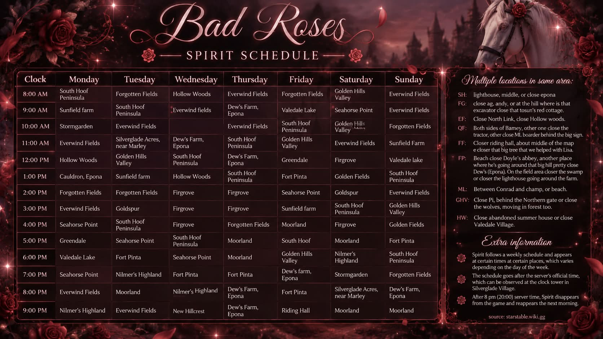

Join the Discord
Use the button and enter the Bad Roses community server.
Welcome to our little corner of Jorvik
A Star Stable community for horse collectors, players, and fans. Explore the database, join the community, and keep up with Bad Roses.
A little bit of everything
Everything you need, gathered in one place — from useful game references to our weekly Spirit sightings.
Browse horses, pets, clothing, accessories, equipment, and horse decorations.
Open database ↗Join our community Discord and follow the waitlist instructions to join the in-game club.
View waitlist ↗Check Spirit's reported locations for every day of the week.
View schedule ↗A glimpse inside
Bad Roses
Join the community, explore the database, or follow the latest schedules.
| Loading database… |
Archive
Compiled from the supplied HM 2018 Database spreadsheet. This is a fan-made reference and is not an official Star Stable database.
Step 1
Join our community Discord. The waitlist and all current club instructions are there.
Join community DiscordUse the button and enter the Bad Roses community server.
Find the waitlist channel and read the current instructions.
Complete the steps and wait for an update from the club team.
| Clock | Monday | Tuesday | Wednesday | Thursday | Friday | Saturday | Sunday |
|---|
Field notes
Before you ride
Source reference: starstable.wiki.gg · Schedule supplied by Bad Roses
The championship schedule has been left empty for now, just as requested. It can be added here when you're ready.
Back to the main page ↗This site is a static website. It does not have an account system, contact form, payment system, analytics script, advertising tracker, or site-created cookies. Searching the database happens in your browser.
If hosted on GitHub Pages, GitHub may process technical request information such as IP addresses for security and service operation. External links and item images may connect your browser to third-party services, which have their own privacy practices.
If you later add analytics, embedded media, a form, or another tracking/collection tool, review your privacy and cookie obligations before publishing it. This page is practical information, not legal advice.
Bad Roses is an independent fan community and is not affiliated with, endorsed by, or sponsored by Star Stable Entertainment AB. Star Stable Online and its related names and content belong to their respective owners.
The spreadsheet supplied for this site credits Abbie Starwatcher's Starstable Database and velausc.github.io/sso-items-list/ for item photos. Images are loaded from the image URLs present in that workbook. If you own material displayed here and have a concern, remove or replace it before publishing.
